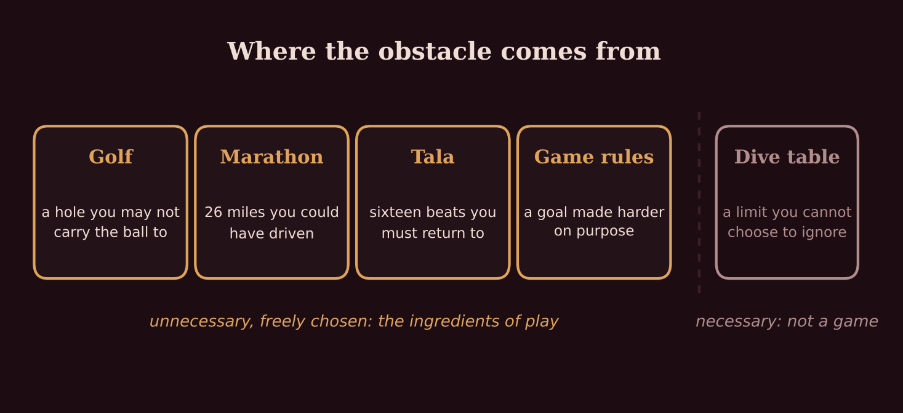
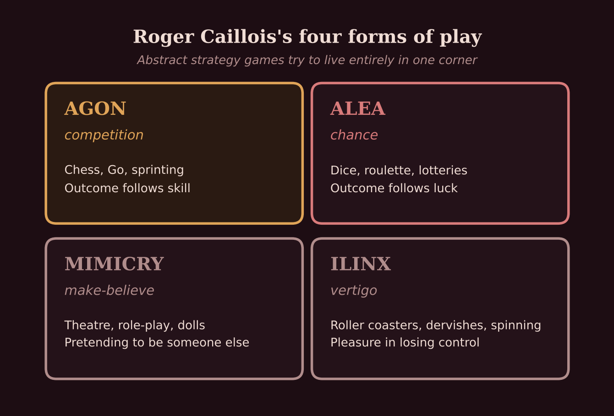
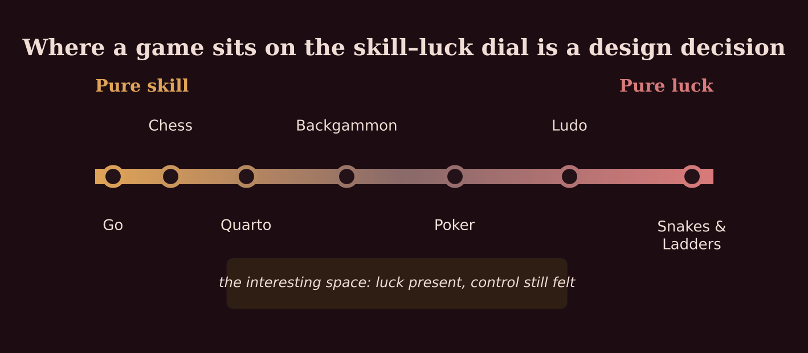
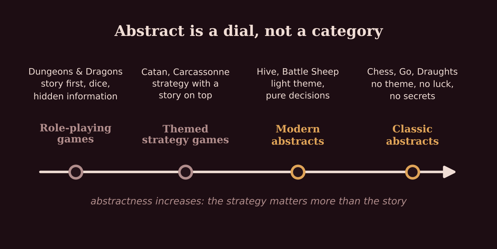
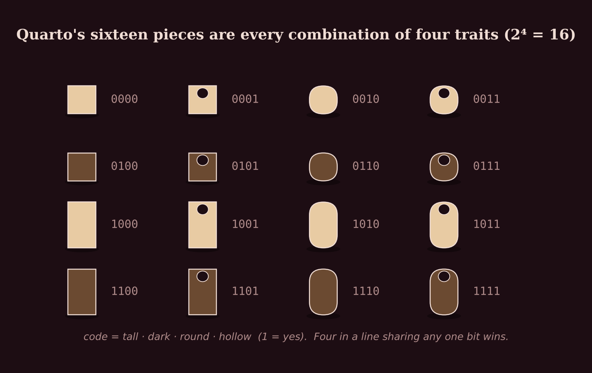
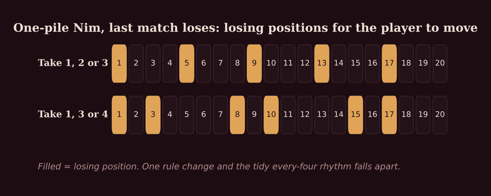
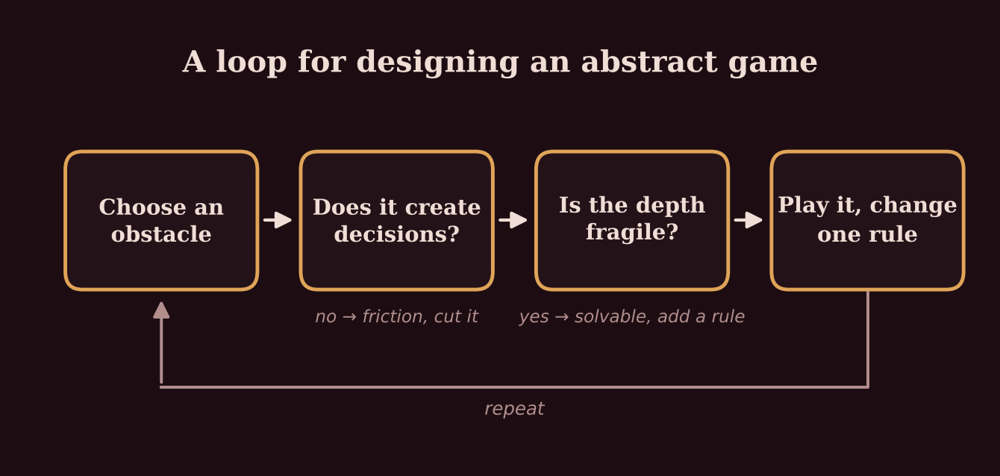

Unnecessary Obstacles
On games, rules, and the strange pleasure of being inconvenienced on purpose
This week I learnt a game called Quarto. I tried it once and lost. Then again, and again, until I won. Somewhere around the twelfth turn of most of those games there is a moment when you realise that, playing by the rules, there is no chance in hell you can win. And we carry on anyway. I would sit there holding a small wooden cylinder, sometimes seeing the ending coming and sometimes not, trying to think of the next move, hoping only to lose as slowly as possible and not give up before the board did.
Throughout this I had a pile of work waiting. Nobody made me play. Nothing was at stake. I had spent twenty minutes being carefully, deliberately inconvenienced by a set of rules I had agreed to, and I wanted more of it.
Psychology has good explanations for that. Mihaly Csikszentmihalyi called activities like this autotelic, done for their own sake, and found that we return to the ones pitched just above our current skill: too easy and we are bored, too hard and we are anxious, and a game you keep narrowly losing sits right on the edge. Edward Deci and Richard Ryan would point to the fact that I chose it; the same game set as homework would have felt like work. Gambling researchers call what a close loss does to you the near-miss effect: almost winning keeps people playing in a way a clear loss does not, which is why slot machines are built to produce more near misses than chance would. All true, and none of it quite the answer I was after. That came from somewhere I did not expect: a philosopher who wrote an entire book in the voice of a dying grasshopper.
The grasshopper's definition
Bernard Suits published The Grasshopper in 1978, and it is one of the few works of philosophy that is also funny. The grasshopper of Aesop's fable, the one who played all summer and starved in winter, is dying, and uses his last hours to argue to the ants that playing was the right call all along. Along the way he answers a question Wittgenstein had declared unanswerable twenty-five years earlier: what is a game?
Wittgenstein's view, in the Philosophical Investigations, was that you cannot define it. Look at board games, card games, ball games, a child bouncing a ball against a wall, he said, and you will not find one feature they all share. What you will find is a web of overlapping resemblances, the way members of a family share a nose here and a temper there without any single trait running through all of them. He thought this was true of most words, and that game was simply the clearest example.
Suits disagreed, and his reply is compact enough to carry in a pocket. A game is the voluntary attempt to overcome unnecessary obstacles. Unpacked, it has four parts. There is a goal: get the ball in the hole. There are permitted means: clubs. There are rules that forbid more efficient means: you may not walk over and drop the ball in by hand. And there is an attitude, which Suits calls the lusory attitude, from the Latin for play: you accept the inefficient rules precisely so that the activity can exist. You do not resent the no-hands rule in golf. You understand that without it there is no golf.
That fourth part does more work than it looks. It is why cheating is not a way of winning but a way of leaving. The cheat has stopped accepting the obstacles, and so has stopped playing the game he claims to have won. It is also why the player who argues every rule can ruin a game without breaking one: he is inside the rules and outside the attitude.

The sharpest test of the definition I know comes from diving. Diving has rules that look identical to a game's from the outside: ascend slowly, stop at five metres for three minutes, do not push your time at depth. But nobody chose them for the sake of the activity. They are the gas laws wearing a wetsuit. Ignore the dive table and you have not spoiled a game, you have nitrogen in your joints. Suits's word unnecessary is doing quiet, heavy lifting. A game's obstacles have to be ones you could step around. That is what makes accepting them feel like freedom rather than obedience.
A game is the voluntary attempt to overcome unnecessary obstacles. Everything else is detail.
Four ways to play
Suits was writing against a tradition. Johan Huizinga's Homo Ludens (1938) argued that play comes before culture, that law, war, poetry and philosophy all grew out of it, and that play is always free, bounded in time and space, and governed by rules that hold absolutely inside the boundary and not at all outside it. He called the boundary the magic circle. The chessboard, the pitch, the stage: step inside and different laws apply.
Roger Caillois, writing twenty years later, thought Huizinga had missed the gambler. Play is not only the noble, creative thing Huizinga described; it also includes roulette, which creates nothing and is governed entirely by chance. So Caillois sorted play into four kinds, and the sorting has stuck. Agon is competition: chess, sprinting, anything where the outcome follows skill. Alea, from the Latin for dice, is chance: roulette, lotteries, anything where it does not. Mimicry is make-believe: theatre, dressing up, a child being a tiger. Ilinx, from the Greek for whirlpool, is vertigo: the roller coaster, the spinning child, the pleasure of briefly losing control of your own body.

The last category caught me off guard, because I had spent years inside it without a name for it. Kathak has the chakkar: a fast spin on the spot, repeated ten, twenty, fifty times, with the eyes snapping back to a fixed point each revolution so you do not fall. It is vertigo taken into the body and disciplined into form, which is to say it is ilinx with agon laid on top. Caillois would have recognised it immediately. The whirling dervishes are in his book.
Abstract strategy games, in Caillois's terms, are an attempt at pure agon. No dice, so no alea. No theme, so no mimicry. Nothing physical, so no ilinx. Two minds, a board, and nothing to blame but yourself. That is their appeal and their problem in one sentence. A beginner at chess loses to a strong player every single time, knows it by move ten, and has to decide whether to come back next week. Dice would have let her win occasionally. Dice keep people at the table.
The dial
So I have stopped thinking of luck as a flaw and started thinking of it as a dial. Every game sits somewhere between pure skill and pure chance, and the position is one of the first things a designer decides, whether or not they know they are deciding it.

At one end, Go: no randomness at all, a board of 361 points, and after two and a half thousand years of continuous play nobody has run out of things to discover. At the other, Snakes and Ladders, where there are no decisions whatsoever and the entire game could be played by a machine rolling a die for both sides. The interesting territory is the middle. Backgammon has dice, but strong players beat weak players over any reasonable number of games, because the luck is loud in one game and almost silent across fifty. Poker is similar with hidden information added. These games do something clever: they let players feel in control while chance does a great deal of the work in any single evening, and players reliably credit their own skill for results that were half the dice.
Call that elegant design or a quiet trick, depending on your view of people. What it is not is an accident. Adding dice widens the pool of who can win; removing them narrows it. They are different games for different rooms.
What counts as abstract, and who gets to say
Even the category turns out to be soft at the edges. Is backgammon an abstract? It has dice. Is Stratego? Its pieces are hidden. Is Hive, whose pieces are beetles and grasshoppers and a queen bee you must protect, an abstract with a theme or a themed game that happens to be abstract? The only answer that survives contact with an actual shelf of games is that abstractness is a spectrum, and the question that places a game on it is whether the strategy matters more than the story.

People who take abstracts seriously keep a longer list: two players, turns rather than simultaneous moves, no luck, no hidden information, no dexterity, discrete positions, a game that ends. And above all elegance, which the hobby defines with a phrase I have been repeating since: minimal rules, maximum depth. Go has two rules that matter and a professional career's worth of depth. Tic-tac-toe has about as many rules and is exhausted by age eight.
Minimal rules, maximum depth is also the best description of a tala I have ever heard. Teentaal, the commonest rhythm cycle in Kathak, has sixteen beats and essentially one rule: whatever you improvise, you land on sam, the first beat of the next cycle. Everything else is open. A dancer can build a tihai, a phrase repeated three times, that pulls against the pulse for two full cycles and resolves on the beat like a key turning in a lock, and the whole pleasure for the audience is hearing it arrive. One rule, never exhausted.
Treat the purist's list as a set of dials rather than commandments. A designer who keeps a little hidden information, or a touch of theme, is not failing a test. They are choosing a feel.
Sixteen pieces, four questions
Quarto was designed by a Swiss mathematician called Blaise Müller and published in 1991, and it is the game that taught me how much can hide in a small wooden box. There are sixteen pieces. Each is tall or short, dark or light, round or square, hollow or solid. You win by completing a line of four that share any one of those traits. The twist, and it is a good one, is that you do not choose the piece you place. Your opponent picks it up and hands it to you. Then you pick one for them.

Count the pieces and you will find they are every possible combination of the four traits, each exactly once. Two to the fourth. Nothing missing, nothing duplicated. The whole design space is on the table, visible to both players, and that completeness is a large part of why the game feels fair: there is no piece your opponent has that you do not know about. Once you see each piece as a four-bit code, playing becomes a matter of elimination. Before you hand something over you look at every line with three pieces in it, note which traits would finish it, and refuse to give away anything carrying one of those traits. What is left is safe. Early on that is almost everything. Late on it is often nothing, which is the moment I started with.
The handing-over is what makes it work. A plain line-up-four game with these pieces would be solved by lunchtime. Making you choose your opponent's piece turns it into a game about what you give away, and that tightens every turn as the board fills. Quarto was solved by computer in 1998 (perfect play is a draw), but humans do not play perfectly, and the tension survives.
When a game stops being one
Now the smallest game of all. A pile of matches. On your turn you take one, two or three. Whoever takes the last match loses. The game is called Nim, a name a Harvard mathematician named Charles Bouton gave it in 1901 when he published its complete solution, possibly from the German nimm, take, or possibly because WIN turned upside down spells NIM. Nobody is sure, which is the only mysterious thing about it.
You can solve it backwards in your head. A pile of one is a loss for whoever has to move: they must take it. So two, three and four are wins, because you can leave your opponent exactly one. Five is a loss again, because every move from five leaves two, three or four. The pattern repeats every four. One, five, nine, thirteen, seventeen: lose. Everything else: win, and the winning move is always to leave your opponent on one of those numbers.

Once you know this the game evaporates. Every position has a known best move and there is nothing left to decide. That is the designer's trap in miniature: a game needs enough structure that thinking is rewarded, but not so little depth that thinking finishes it. The second row of the chart shows something else worth remembering. Change the allowed moves from one-two-three to one-three-four and the losing positions scatter into an irregular pattern. One small rule change and the whole structure is rebuilt. That is worth holding in mind the next time anyone says they are going to tweak a rule 'just slightly'.
There is a deeper result underneath, and it is one of the loveliest in the subject. In the 1930s Roland Sprague and Patrick Grundy independently proved that every game of this family (two players, both have the same moves available from any position, last move decides) is equivalent to a pile of Nim. Not similar to. Equivalent. Every such game, however elaborate, has a secret Nim-number, and if you can compute it you can play perfectly. For anyone designing one the lesson is pointed: if both players always have the same options, you have probably built a puzzle. Giving the two sides different pieces, as chess does, is one of the oldest escapes, and chess arrived at it by accident.
Chess did not always have a queen
That is not a figure of speech. The game that reached Europe from Persia, by way of the Arab world, around the year 1000 had, beside the king, a piece called the fers, a counsellor or vizier, which moved one square diagonally and was the weakest piece on the board. The bishop, then an elephant, jumped exactly two squares diagonally and could not be blocked. Pawns moved one square only. Castling did not exist. Games were slow, and the opening took forever, which is why medieval players sometimes started from pre-arranged positions to skip it.
Then, in Spain or Italy towards the end of the fifteenth century, the vizier acquired the combined moves of the rook and the bishop (some historians think by stages over a couple of centuries, others more or less at once), and the game became unrecognisable. The Italians called it scacchi alla rabiosa, mad chess, and the madness was the queen. Openings mattered suddenly. A game could be lost in ten moves. Within a couple of generations the old game had all but vanished from Europe.
I bring this up because it is the Nim lesson at the scale of a civilisation. One piece's move changed and a game that had been stable for centuries was rebuilt around it. And it is a reminder that the games we treat as given, as if they had been handed down finished, were tinkered into shape by people who were, in the end, playing with the dials.
A scoring rule is a sentence
Historians have been sorting games for a century: by goal (race, alignment, hunt, war, and the mancala family, where you sow seeds round a board and collect the most), by mechanism (moving, capturing, blocking, stacking, flipping), and most recently by win condition, which yields the distinction I find most useful of all. Do you win on points, or on position? Position games end when the board reaches a certain state. Points games end when somebody has counted highest. It sounds technical, but it changes what players do, because the moment you attach a number to something the number acquires a gravity of its own.
I know this from outside games. I count what I eat, carefully, and have done for years, and the one thing I am sure of is that a number you track becomes a thing you optimise, whether or not it was ever meant to be the point. The calorie is itself a borrowed unit, devised for engines and explosives; Wilbur Atwater made it the measure of food for the American public in the 1890s, and it has been bending behaviour ever since. Designers know this better than anyone. A scoring rule is never a neutral measurement. It is a sentence that says care about this, and players obey it more literally than you intended. None of the classification schemes is complete, and I have decided that is a feature: the useful move for a designer is to take a goal from one list and a mechanism from another and ask whether anyone has combined them yet.
A loop
Here is the method I have extracted from all of this, and I will use it the next time I try to build something.

Choose an obstacle, in the grasshopper's sense: a restriction that makes the goal harder than it needs to be. Ask whether it creates decisions; if players are just carrying out a procedure, it is friction, and it should go. Ask whether the depth is fragile; if a few minutes of backward reasoning solves it, as with Nim, you have a puzzle and need another rule, an asymmetry, or a bigger board. Then play it with someone who will tell you the truth, and change one rule at a time, remembering how far one change travelled in the Nim chart and in fifteenth-century Spain. None of this would be news to a working designer. But it is the difference between admiring games and understanding them, and it looks suspiciously like how I would describe learning a new composition: pick the constraint, see what it produces, change one variable, repeat.
The same idea in different clothes
Having written all this down, what strikes me is not any one lesson but how often one idea turned up wearing different clothes. A chosen obstacle is a golf hole, a marathon, a sixteen-beat cycle, a rule. Disciplined vertigo is a chakkar and a roller coaster. A scoring rule is a game mechanic and a calorie target. Wittgenstein's objection is hiding inside every taxonomy of games anyone has ever drawn. The fifteenth-century queen is Nim's second row. None of these connections were waiting in any one book. They appeared because I happened to walk in carrying other things.
I used to suspect that breadth was a polite word for not finishing anything. I have started to think the opposite. Every practice you keep up grinds a lens, and a lens is most useful pointed at something it was not ground for. The dancer hears the rhythm in a rule set. The diver can tell which rules are really physics. You do not have to be expert in any of them for the view to change. You just have to have looked through more than one.
Every practice grinds a lens, and a lens is most useful pointed at something it was not ground for.
Next I want to look at the games where going first is an advantage, and at the ingenious, slightly desperate things designers have done about it, from the pie rule to the Japanese habit of handing the second player a few free points before the game starts. I suspect it will complicate the tidy Quarto story above, which is usually a sign of being on to something.
References
- Albert, M. H., Nowakowski, R. J. and Wolfe, D. (2007). Lessons in Play: An Introduction to Combinatorial Game Theory. A K Peters.
- Bouton, C. L. (1901–02). 'Nim, a game with a complete mathematical theory'. Annals of Mathematics, 3(1/4), 35–39.
- Caillois, R. (1958). Les jeux et les hommes. Gallimard. English edition: Man, Play and Games, trans. M. Barash (1961). Free Press.
- Csikszentmihalyi, M. (1990). Flow: The Psychology of Optimal Experience. Harper & Row.
- Deci, E. L. and Ryan, R. M. (1985). Intrinsic Motivation and Self-Determination in Human Behavior. Plenum.
- Goossens, L. (1998). Computer solution of Quarto, showing a draw under perfect play. Summarised in Wikipedia, 'Quarto (board game)'.
- Grundy, P. M. (1939). 'Mathematics and games'. Eureka, 2, 6–8.
- Huizinga, J. (1938). Homo Ludens. English edition: Homo Ludens: A Study of the Play-Element in Culture (1949). Routledge & Kegan Paul.
- Murray, H. J. R. (1913). A History of Chess. Oxford University Press.
- Parlett, D. (1999). The Oxford History of Board Games. Oxford University Press.
- Reid, R. L. (1986). 'The psychology of the near miss'. Journal of Gambling Behavior, 2(1), 32–39.
- Sprague, R. (1935–36). 'Über mathematische Kampfspiele'. Tôhoku Mathematical Journal, 41, 438–444.
- Suits, B. (1978). The Grasshopper: Games, Life and Utopia. University of Toronto Press.
- Taylor, M. N. (2012). 'How did the queen go mad?' In D. E. O'Sullivan (ed.), Chess in the Middle Ages and Early Modern Age. De Gruyter. Summarised at Medievalists.net.
- Wittgenstein, L. (1953). Philosophical Investigations, trans. G. E. M. Anscombe. Blackwell. §§65–71.
- On the calorie: 'A brief history of the calorie', JSTOR Daily; Atwater's 1896 respiration-calorimeter experiments at Wesleyan University.
New letters, slid under your door.
Subscribe on Substack